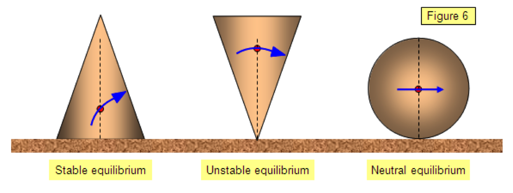

Statics
Statics is the study of forces without motion; or more formally, the branch of mechanics that deals with forces in the absence of changes in motion. Statics implies changelessness.
When all the forces that act upon an object are balanced, then the object is said to be in a state of equilibrium.
The forces are considered to be balanced if the rightward forces are balanced by the leftward forces and the upward forces are balanced by the downward forces. This however does not necessarily mean that all the forces are equal to each other.
First Condition of Equilibrium.
an object to be in equilibrium, it must be experiencing no acceleration. This means that both the net force and the net torque on the object must be zero. Here we will discuss the first condition that of zero net force.
In the form of an equation, this first condition is:
Fnet=0
In order to achieve this conditon, the forces acting along each axis of motion must sum to zero. For example, the net external forces along the typical - and y - axes are zero. This is written as:
net Fx=0 net Fy= 0.
Second Condition
The second condition of static equilibrium says that the sum torque acting on the object, as calculated about any axis, must be zero.
The center of gravity is the theoretical point where all the body weight is concentrated or the theoretical point about which the body weight is evenly distributed.
The line of gravity is an imaginary vertical line that passes through the body's center of gravity. The line of gravity represents the direction gravity acts on a body - it is a straight line perpendicular to the earth's surface through the body at the center of gravity.
Balance is a physical ability that may be improved through purposeful practice. There are two types of balance:
1. Static balance, when a person remains over a relatively fixed base and
2. Dynamic balance, when a performer is in motion.
Stability is a quality relating to the degree to which a body resists being upset or moved. The major factors that affect a person's stability are:
a. the area of the base of support
b. the relation of the line of gravity to the edge of the base
c. the height of the center of gravity and
d. the mass of the person.
Types of equilibrium
